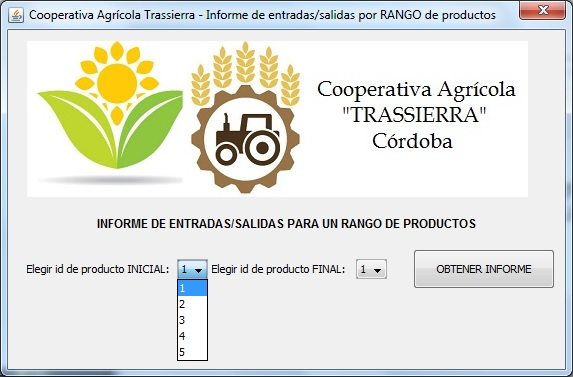

Con esta opción podrá obtener un informe en formato PDF en el que se mostrarán las entradas y salidas de productos registradas en la Cooperativa indicando los identificadores del primer y el último producto a incluir en el informe.
Asimismo se mostrará un gráfico comparativo de los totales netos registrados para cada producto.
